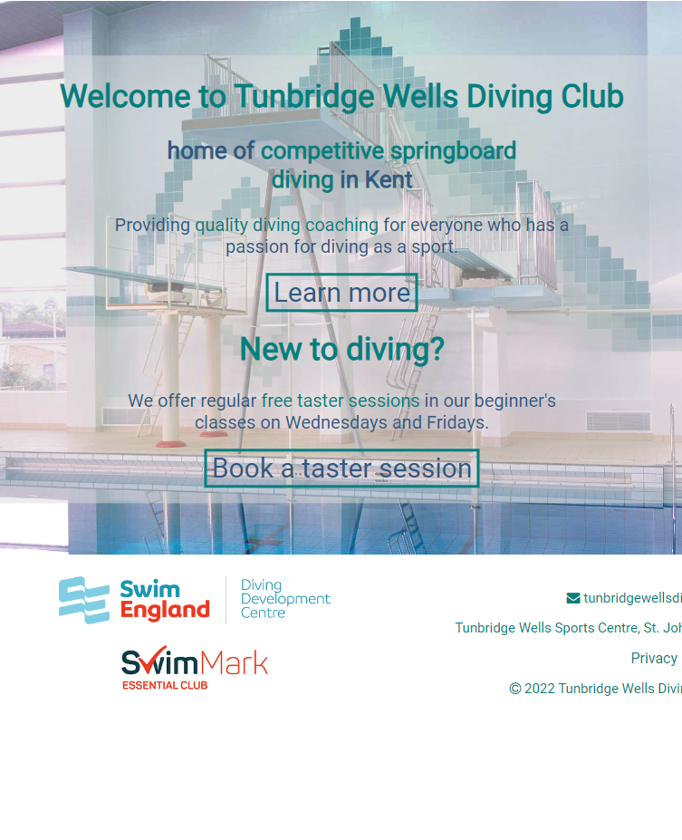

Warren Hawker
Web Developer
Striving for excellence in everything I do
View my projects View code for this website (github)About me
Pleased to meet you, my name is Warren, I'm an aspiring web developer from the UK.
For the past 14 years I have worked in the Leisure industry as an educator of one form or another, but now I'm looking for a career change. I've been interested in programming for many years but it wasn't until covid that I got into web development, when my dad asked me to build his jazz band a new website. This was my first introduction to web development and I haven't looked back since!
My design philosophy is to build clean, minimal UIs that anyone can use. I have found that sometimes the smallest details have a huge impact on the overall user experience. I try my best to put myself in the shoes of the end-user to deliver the best user experience I can.
I am passionate, curious and always strive for excellence in everything that I do. I love learning new things and sharing my skills and work with people so they can benefit from them. Making something that others can enjoyably use is worth all the hard work it takes to make it.
CV and skills
I have experience working with the following technologies


My Work and Projects
Frontend projects
Anime Recommendations app (React)
I got sick of scrolling through page after page of website recommendations looking for my next anime binge, so I created an app to help me. The app uses the Jikan API that gets information from the MyAnimeList website.
This project was the first time I've implemented page pagination, which was very important because depending on the filter settings, you could receive thousands of results from the API.
view demo (opens in a new tab) view code (github)Lifeguard Quiz app (React)
Lifeguards in the UK need to renew their qualification every 2 years, which involves taking a theory exam. As someone who trains Lifeguards, this meant I would have to print out pages and pages of mock exam papers for candidates. Needless to say this is bad for the environment and wastes a lot of time, so I made an app to replace all those pieces of paper.
For this project, my main focus was on making it as easy as possible for users to see their results and learn from their mistakes. The biggest challenge was correctly implementing the timers, which as it turns out is much harder in React than in vanilla JS.
view demo (opens in a new tab) view code (github)Fullstack projects
Wordpress sites
Brighton Rope Website (Wordpress)
Bespoke website with a custom wordpress theme for a local rope group. The Site includes a dynamic event listings page and dynamic booking form using AJAX requests to get up to date information from MySQL database. Getting this all to work was a huge challenge as it was the first time I had worked with AJAX queries to do dynamic fetches that didn't refresh the current page. The backend admin portion of the website keeps track of event participants and allows the admins to check the status of payments and other actions for each event.
view site (opens in a new tab)Neil Coley Band Website (Wordpress)

Bespoke website with a custom wordpress theme for my dad's jazz band. The hardest part of this project was getting the background image on each page to fade smoothly into the background colour without clipping, and allowing the site admins to change the background images at will without it breaking. Getting the band members gallery to look good with a variety of image sizes was also a challenge.
view site (opens in a new tab)Tunbridge Wells Diving Club Website (Wordpress)
Bespoke website with a custom wordpress theme for a local springboard diving club. It was hard coming up with a suitable colour scheme for this website that wasn't just plain blue and white (most diving clubs all use the same colour scheme for their websites!). Overall I'm very happy with the look of this site that makes it stand out from the crowd.
view site (opens in a new tab)